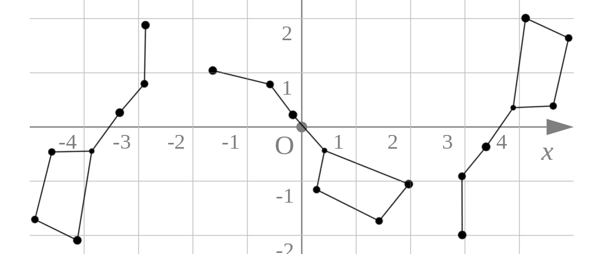
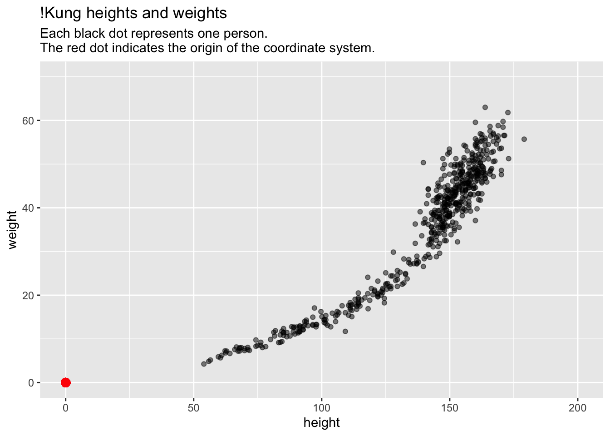
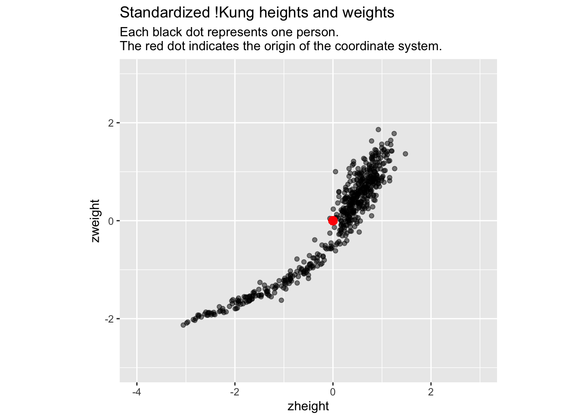
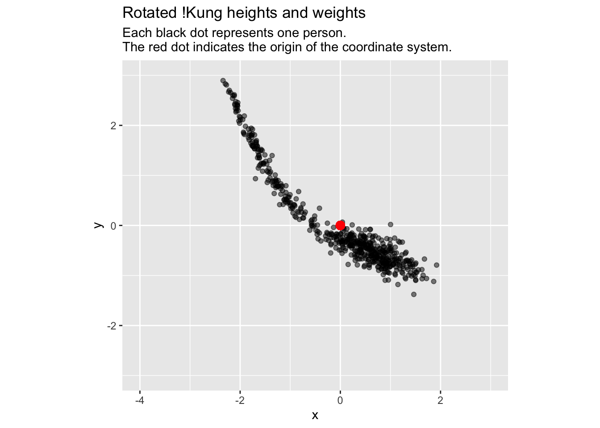
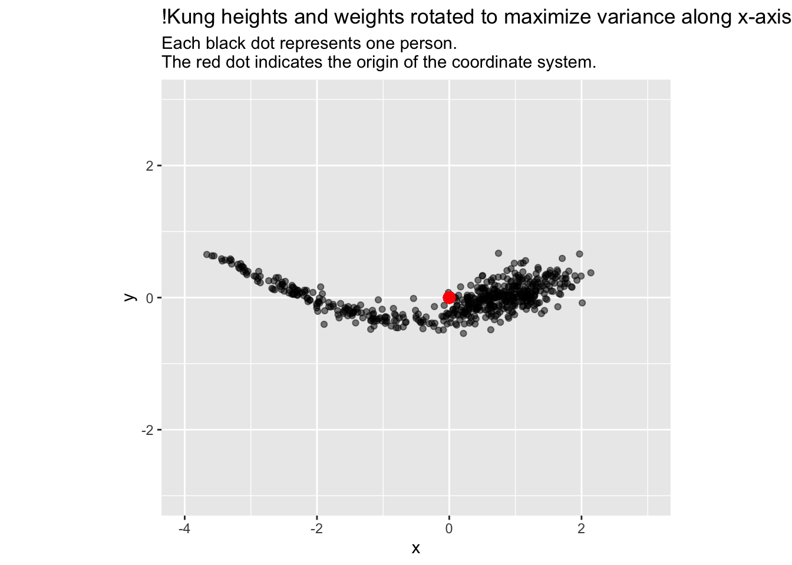

There are many ways to teach Principal Component Analysis (PCA). This way is mine.
The first constellation I learned to recognize was the Big Dipper. In the evening it’s in one part of the sky, and in the early morning, another, but it’s still the Big Dipper. Same thing if I look at it while I slowly spin around. To be more specific, in each of the 3 figures below, the stars have different \(x\) and \(y\) coordinates, yet it is easy to recognize them as the same stars:

Big Dipper
The point is: we recognize the Big Dipper, not by the specific location of the stars in the sky, but by the location of each star relative to the others.
The first and most important step in understanding PCA is to think about your data in the same way that you think about constellations: it’s the relationships between your data points, not their individual values, that matters.
In a scientific study, we typically measure multiple values on each person (or population, or whatever), e.g., age, height, weight, sex, and so forth. The mental frame shift to make is to think about the collection of multiple values on a single person as a single data point — a single “star” in the sky — and all the data points as a constellation of stars in the sky. If we had two measurements per person – e.g., height and weight – then each person (each data point) has two coordinates; if we had three measurements per person – e.g., height, weight, and age – then each person (each data point) has three coordinates, and so forth.
In general, you can think about each “unit” in the data – person or observation or “row” – as one point in an \(N\)-dimensional Euclidean space, where \(N\) is the number of variables that you have measured. Viewed this way, the data has a “structure” determined by the relationships of each observations to the others that will be preserved even if the coordinate system is changed.
Here is a concrete example with 2 variables per person – height and weight – and thus a 2-dimensional space of points:
# Height and weight of !Kung individuals.# The !Kung are an ethnic group in# southwest Africa.# From Howell via McElreath:d <- readr::read_delim("https://raw.githubusercontent.com/rmcelreath/rethinking/master/data/Howell1.csv", delim =';')library(ggplot2)ggplot(d, aes(height, weight)) +geom_point(alpha =0.5) +scale_x_continuous(limits =c(0,200)) +scale_y_continuous(limits =c(0,70)) +geom_point(x =0, y =0, colour ='red', size =3) +labs(title ="!Kung heights and weights", subtitle ="Each black dot represents one person.\nThe red dot indicates the origin of the coordinate system.")

Most students would (correctly) interpret this plot as depicting the relationship between height and weight.
There is another way.
Although each star in the Big Dipper is also described by two variables – an \(x\) and \(y\) coordinate (or an ascension and declination) – both variables are in the same units (angles). This is an important reason why we can think about the Big Dipper in space without thinking about the \(x\) and \(y\) values of each star.
The first step on our journey is therefore to put our height and weight variables into the same units by standardizing them (subtract the mean from each variable, and then divide it by its standard deviation):
# Standardize each variabled$zheight <-scale(d$height)[,1]d$zweight <-scale(d$weight)[,1]# Plotggplot(d, aes(zheight, zweight)) +geom_point(alpha =0.5) +geom_point(x =0, y =0, colour ='red', size =3) +coord_fixed(xlim =c(-4, 3), ylim =c(-3, 3)) +labs(title ="Standardized !Kung heights and weights", subtitle ="Each black dot represents one person.\nThe red dot indicates the origin of the coordinate system.")

Many folks would (correctly) interpret these new variables as transformed versions of the original data. However, I would like you to instead see this as a transformation of the coordinate system: we have translated the origin of the coordinate system to the middle of the data (the red dot), and we have put the \(x\) and \(y\) axes on the same scale (1 unit of x equals 1 unit of y). The data remain the same.
The translation of the origin to the center of the data is useful because positive values on the \(x\)-axis now indicate values that are greater than the mean, and negative values now indicate values that are less than the mean. The same goes for the \(y\)-axis. The translation of the origin makes it easy to identify individuals whose heights and weights are above or below average. Transforming the coordinate system (not the data!) can help us interpret the data – the new origin has advantages over the original origin.
Putting the \(x\) and \(y\) axes on the same scale is useful because we can now more easily think about this 2d space as a uniform height-weight space, or height-weight continuum, independent of individual \(height\) and \(weight\) values.
We are ready for another transformation of the coordinate system: a rotation around the origin:
angle <--1.5# angle of rotation in radians# New x and y coordinates after rotationd$x <- d$zheight *cos(angle) - d$zweight *sin(angle)d$y <- d$zheight *sin(angle) + d$zweight *cos(angle)ggplot(d, aes(x, y)) +geom_point(alpha =0.5) +geom_point(x =0, y =0, colour ='red', size =3) +coord_fixed(xlim =c(-4, 3), ylim =c(-3, 3)) +labs(title ="Rotated !Kung heights and weights", subtitle ="Each black dot represents one person.\nThe red dot indicates the origin of the coordinate system.")

Here are the pairs of coordinates of our first 6 data points in each of our 3 different coordinate systems (the original, standardized, and rotated coordinate system):
height
weight
zheight
zweight
x
y
151.76
47.83
0.49
0.83
0.86
-0.43
139.70
36.49
0.05
0.06
0.06
-0.05
136.52
31.86
-0.06
-0.25
-0.26
0.04
156.84
53.04
0.67
1.18
1.23
-0.59
145.42
41.28
0.26
0.38
0.40
-0.23
163.83
62.99
0.93
1.86
1.92
-0.79
Although the pairs of coordinates are radically different, we easily recognize the same constellation of data in the plots, regardless of coordinate system.
We have seen how translating the origin of the coordinate system to the center of the data helps us interpret the data. But how could rotating the coordinate system be helpful?
In most studies, we measure stuff because we know that the things we’re studying – people in this case – vary, and it is exactly this variation that we want to understand. What if we rotated the coordinate system so that the variance of the data was maximized along the \(x\)-axis? Then, in this rotated coordinate system, folks with large positive values on the \(x\)-axis would be maximally “different” from folks with large negative values on the \(x\)-axis in “height-weight” space. Differences in \(y\)-values would then be less important in distinguishing individuals.
We can find the rotation that maximizes variance along the \(x\)-axis by trial and error: simply choose different angles, compute the rotation, and then compute the variance or standard deviation along the \(x\)-axis. Rinse and repeat unit you find an angle that maximizes the standard deviation. There will be two such angles, each \(\pi\) radians (180 degrees) apart:
# Run this code over and over with# different values for the angle# until sd(d$x) is at a maximum.angle <--0.78# This angle comes close; -0.78 + pi would also come closed$x <- d$zheight *cos(angle) - d$zweight *sin(angle)sd(d$x) # We could also use var(d$x)
[1] 1.393114
A second way would be to use R’s optim function, which automates the above process:
# This function rotates and then# computes sd along x.sd_x <-function(angle) {sd(d$zheight *cos(angle) - d$zweight *sin(angle))}# This function finds the angle that # maximizes the above functionopt <-optim(0, # Starting value of angle sd_x, # The function to minimizemethod ="Brent", # The optim procedure that works best in 1-Dlower =-pi,upper = pi,control =list(fnscale =-1) # Maximize instead of minimize )
An angle of rotation (in radians) that maximizes sd along x:
opt$par = -0.7853982
The maximized standard deviation:
opt$value = 1.393134
Let’s plot our data using that optimal angle of rotation:
# one optimal angle in radians;# the other would be opt$par + piangle <- opt$par # New x and y coordinates after rotationd$x <- d$zheight *cos(angle) - d$zweight *sin(angle)d$y <- d$zheight *sin(angle) + d$zweight *cos(angle)ggplot(d, aes(x, y)) +geom_point(alpha =0.5) +geom_point(x =0, y =0, colour ='red', size =3) +coord_fixed(xlim =c(-4, 3), ylim =c(-3, 3)) +labs(title ="!Kung heights and weights rotated to maximize variance along x-axis", subtitle ="Each black dot represents one person.\nThe red dot indicates the origin of the coordinate system.")

Guess what? The \(x\)-axis is principal component 1 (PC1), and the \(y\)-axis is principle component 2 (PC2), as we can confirm by comparing our results to those from R’s prcomp (principal component) function:
# Compute PCA using the standard R functionm <-prcomp(~ zheight + zweight, data = d)summary(m)
Importance of components:
PC1 PC2
Standard deviation 1.3931 0.24326
Proportion of Variance 0.9704 0.02959
Cumulative Proportion 0.9704 1.00000
# Compare the standard deviations above with:sd(d$x)
[1] 1.393134
sd(d$y)
[1] 0.2432649
Compare our x & y values…
x
y
0.9326787
0.2409332
0.0788411
0.0052468
-0.2244852
-0.1354080
1.3134063
0.3613867
0.4554072
0.0890045
1.9703735
0.6604768
… with those from prcomp
PC1
PC2
-0.9326787
-0.2409332
-0.0788411
-0.0052468
0.2244852
0.1354080
-1.3134063
-0.3613867
-0.4554072
-0.0890045
-1.9703735
-0.6604768
The minus signs are reversed because the axes are rotated 180 degrees, but the variance is still maximized along the x-axis (remember, there are 2 rotations that will maximize the variance).
In summary, principal components are simply a new orthogonal (perpendicular) coordinate system for your data, rotated so the variance of your data is maximized along the first axis (PC1); then, rotating around the first axis, the remaining variance is maximized along the second axis (PC2), which is perpendicular to the first; and so forth, until the directions of all axes are specified. Thus, there will be as many principal components as there are dimensions in your data (i.e., number of variables), and the variance will decrease across each successive component across each successive component.
There are many uses of this new coordinate system. In our example, 97% of the variance in our data falls along PC1. Thus, we might interpret PC1, which is a combination of height and weight, as something like size. By rotating our coordinate system, we have identified underlying “structure” in our data. For 2-d data like our example, PCA is not that useful. But when our data have many dimensions, PCA and related techniques can find structure that would be difficult or impossible to find without them.
Note #1: The prcomp and other PCA functions do not find these rotations in the same way we did. Instead, they use methods like singular value decomposition, which you can read about on wikipedia.
Note #2: You might have heard of rotation after PCA, or terms like varimax rotation. These also seek useful rotations, but are distinct from PCA. You can read more about them, and their relationship to PCA here, here, and here.
Note #3: There is a great set of alternative explanations of PCA here .